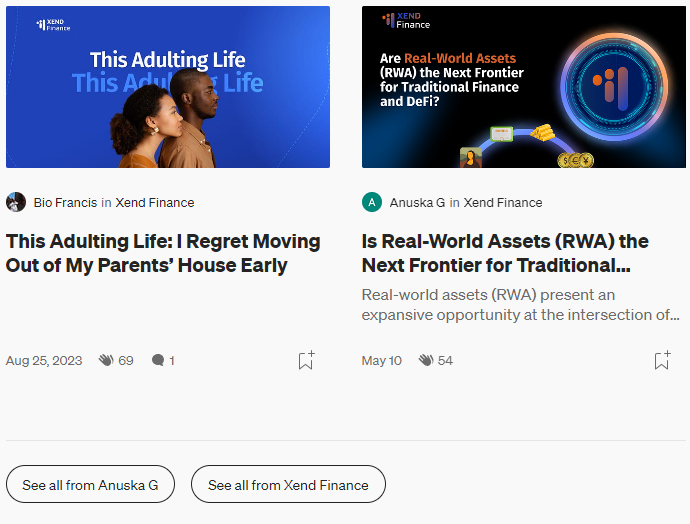
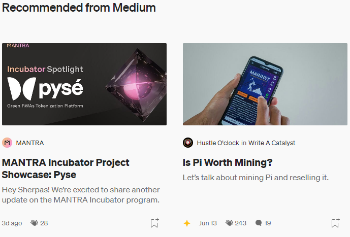

Published in Xend Finance 3.9K Followers, 5 min read . Jun 20, 2024
The Asset Chain is the native blockchain for Xend Finance’s Real-World Asset OAE (Onchain Asset Environment)- created to allow the seamless onboarding of all legally transactable asset types on-chain. We’re excited to announce the introduction of the Asset Chain Testnet, so the Xend community can acquire the first taste of easy and smooth RWA tokenization, verification, and management, increasing accessibility for diverse investment opportunities! What’s more, we’ll soon have a series of exciting tasks and airdrops for our beloved community members, so do stay tuned for it!
The Asset Chain is a decentralized, open-source smart contract platform with the goal to enable quick, secure, and scalable infrastructure for dApps. Lachesis, an aBFT consensus protocol designed by the Fantom Foundation, powers the Asset Chain, making it both faster and cheaper than contemporaries without trading away security. Lachesis enables scaling transaction throughput while maintaining instant finality without an increased risk of centralization. Notably, we will be making the Asset Chain repositories open-source for greater transparency; our users can both see the code and build upon it.
Here are the most prominent features of Xend Finance’s Asset Chain:
Xend Finance’s Asset Chain relies on Proof-of-Stake to prevent Sybil attacks (a bad actor creating multiple identities to control a network). In fact, the Asset Chain requires a node to stake a minimum amount of 30,000 RWA to compete to validate transactions on the Asset Chain. This is how you can understand Xend Finance’s PoS mechanism in a simple manner: validator nodes are in charge of validating transactions, and the staked tokens serve as an economic incentive making them -
On that note, rewards distribution on the Asset Chain is controlled by the ‘Special Fee Contract.’ This contract is subject to change without hard forks as per the rules of governance. At the moment, here’s how reward is distributed:
Here’s a quick look at everything you can find on the Asset Chain Testnet right now:
Interested to try it out? Here’s the information you need to add the Asset Chain Testnet as a custom network to MetaMask:
Network Name: Asset Chain Testnet
RPC Endpoint: https://enugu-rpc.assetchain.org/
Chain ID: 42421
Currency symbol: RWA
Block Explorer (Testnet): https://testnet.assetchain.org/
While we introduce airdrops to our users, we encourage you to start checking for bug s and errors in our Testnet; of course, bug bounties are on the way!
Follow along on our exciting adventure: visit our website and connect with us on WhatsAPP and Telegram
Further, do reach out to us with any feedback through this Google form! Remember, you can fill this as many times as you’d like.
 